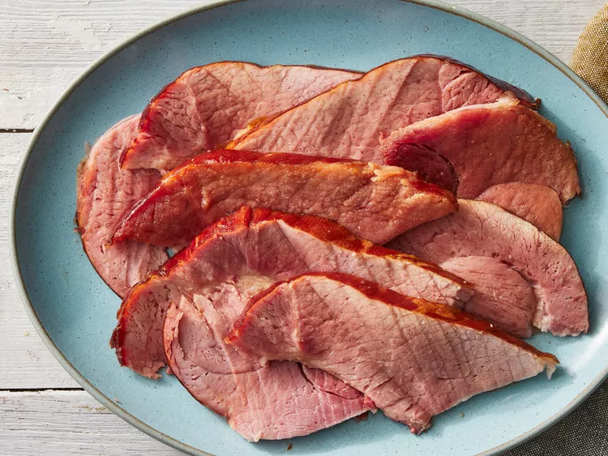

Slow Cooker Ham
Description
Slow cooker ham is juicy and delicious with this no-fuss recipe that's perfect for holiday meals. The only ingredients you need are brown sugar and a bone-in picnic ham.
Ingredients
- 2 cups packed brown sugar
- 1 (8 pound) cured, bone-in picnic ham
Directions
- Spread about 1 ½ cups of brown sugar on the bottom of a slow cooker.
- Place ham on the brown sugar with the flat side facing down; you might have to trim it a little to make it fit.
- Use your hands to rub the remaining brown sugar onto the ham.
- Cover, and cook on Low for 8 hours.